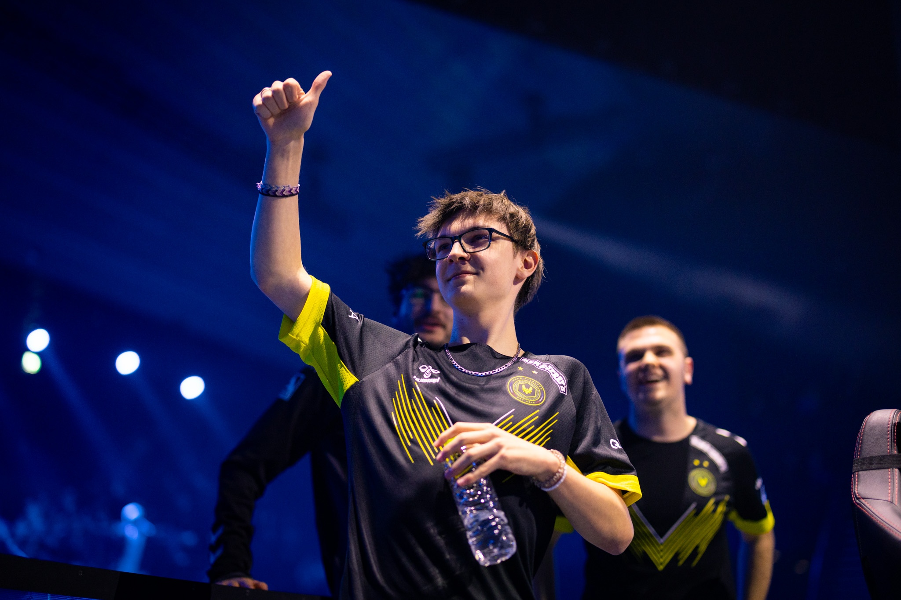

Zen
Alexis "zen" Bernier (né le 20 Février, 2007) est un joueur Rocket league Français.
| Années | Ses équipes | Ses trophées |
|---|---|---|
| 2020/02/?? - 2020/05/?? | Space Knights | nicecactus Weekly Elite: 3v3 - Cup 41 |
| 2021/04/18 - 2021/06/22 | Glory4Builders | Ultimate Open Series 5 DreamHack Beyond 2021: Boost Cup - Europe 2v2 nicecactus Weekly Elite: 3v3 - Cup 24 |
| 2022/10/02 - Aujourd'hui | Team Vitality | Ranked Royale: Europe Rising Stars Odyssey #1 RLCS 2022-23 - Spring: EU Regional 1 - Spring Open RLCS 2022-23 - Spring: EU Regional 2 - Spring Cup RLCS 2022-23 - Spring: EU Regional 3 - Spring Invitational Herculyse's New Era Series: European Path to Pro RLCS 2022-23 - Spring Split Major RLCS 2022-23 - World Championship RLCS 2024 - Major 2: EU Open Qualifier 4 |
| 4 années | 3 équipes | 13 trophées |